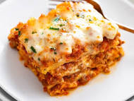

Lasagna

Description
Lasagna is a classic Italian dish known for its rich layers of flavor and hearty ingredients. It typically consists of alternating layers of pasta sheets, a meat-based ragu or tomato sauce, creamy béchamel or ricotta cheese, and melted mozzarella or Parmesan cheese. The dish is baked until the top is golden and bubbly, resulting in a comforting and filling meal that is perfect for family gatherings and special occasions. Lasagna is not only a beloved staple in Italian cuisine but has also become a favorite comfort food around the world due to its satisfying blend of textures and tastes.
The versatility of lasagna allows for numerous variations, from vegetarian versions featuring layers of roasted vegetables to indulgent recipes incorporating béchamel sauce and rich meats like sausage or ground beef. The process of making lasagna involves careful assembly to ensure each layer is distinct yet cohesive, resulting in a perfectly balanced dish. Whether enjoyed fresh out of the oven or as leftovers, lasagna remains a timeless dish that brings warmth and satisfaction to the table.
Ingredients
- 12 lasagna noodles
- 1 lb ground beef
- 1 onion, chopped
- 2 cloves garlic, minced
- 24 oz marinara sauce
- 15 oz ricotta cheese
- 1 egg
- 2 cups shredded mozzarella cheese
- 1/2 cup grated Parmesan cheese
- 2 tbsp olive oil
- Salt and pepper to taste
- Fresh basil or parsley for garnish (optional)
Steps
-
Prepare the noodles:
Cook the lasagna noodles according to package instructions until al dente. Drain and set aside.
-
Cook the meat sauce:
In a large skillet, heat olive oil over medium heat. Add chopped onion and minced garlic, sautéing until fragrant and translucent. Add ground beef, breaking it up with a spoon, and cook until browned. Drain excess fat. Stir in marinara sauce and let simmer for 10 minutes. Season with salt and pepper to taste.
-
Mix the cheese filling:
In a medium bowl, combine ricotta cheese, egg, half of the shredded mozzarella cheese, and half of the grated Parmesan cheese. Mix well and set aside.
-
Assemble the lasagna:
Preheat your oven to 375°F (190°C). In a 9x13 inch baking dish, spread a thin layer of meat sauce on the bottom. Place a layer of noodles over the sauce. Spread a layer of the cheese mixture over the noodles, followed by a layer of meat sauce. Repeat the layers until all ingredients are used, ending with a layer of meat sauce.
-
Top and bake:
Sprinkle the remaining mozzarella and Parmesan cheese over the top layer of sauce. Cover the dish with aluminum foil and bake for 25 minutes. Remove the foil and bake for an additional 25 minutes, or until the top is golden and bubbly.
-
Serve:
Let the lasagna rest for 10-15 minutes before slicing. Garnish with fresh basil or parsley if desired. Enjoy!